应用视角的操作系统：程序、系统调用与真实应用
课程：2026 春季学期《操作系统原理》，第 2 讲
讲师：蒋炎岩（jyy）
官方课程主页：https://jyywiki.cn/OS/2026/
官方讲义：https://jyywiki.cn/OS/2026/lect2.md
视频来源：Bilibili BV1KNPHzPEra
版权说明：课程讲义与幻灯片归蒋炎岩所有，采用 Creative Commons BY-NC 4.0 许可；本电子书是对课堂讲授的书面化重构，保留出处与许可说明。
导读：应用程序眼中的操作系统
上一讲从历史角度回答了“为什么需要操作系统”。本讲换到应用程序视角，把操作系统理解为：
操作系统是一组 API 和一组对象。
应用程序通过这些 API 管理文件、设备、内存和其他进程。要真正理解这组接口，首先必须彻底回答一个更基础的问题：
什么是程序？
本讲会从 C 语言程序的状态机模型出发，经过解释、函数调用、编译优化、最小可执行文件和系统调用，最后打开真实的 GCC、xedit、Coreutils 和后台守护进程，证明它们与最小的汇编程序没有本质区别。
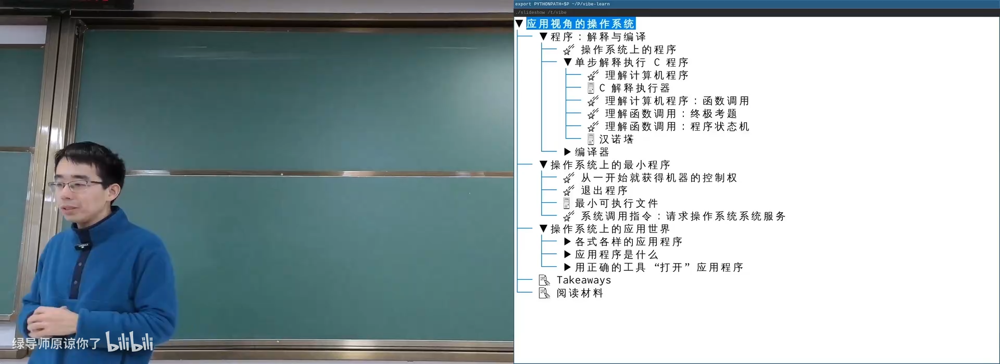
📷 本讲从程序状态机进入操作系统 API
回到原视频 (00:00:40)
1. 为什么选择 C 语言
(参考时间: 00:02:03)
课程主要使用 C 语言分析操作系统。原因不是 C 语言最现代，而是它恰好位于两个极端之间：
- 汇编可以直接操作硬件和系统调用，但不适合构建大型应用；
- JavaScript、TypeScript 等高级语言有大量语言运行时和生态特性，与操作系统接口相距较远；
- C 既能直接调用操作系统 API，又足以编写真实应用；
- C 也是 UNIX 和早期软件生态最重要的构建语言。
C 语言可以被看成“接近机器的高级语言”。理解 C 程序如何执行，就能够在语言语义、机器指令和操作系统接口之间建立清晰联系。
2. 程序：状态机、解释与编译
2.1 任何 C 程序都可以改写为每行只做一件事
复杂表达式可以被拆解为多个简单步骤。例如：
x = y + z + w;
可以改写为：
t1 = y + z;
t2 = t1 + w;
x = t2;
条件、循环和函数调用参数中的复杂表达式，也可以提取为临时变量。经过这种转换后，程序更接近 SimpleC：
- 每一行只执行一个简单动作；
- 条件尽量简化为布尔变量；
- 程序行为对应清晰的状态迁移；
- 每一条语句都容易翻译为少量机器指令。
flowchart LR
C["标准 C 程序"] --> S["SimpleC"]
S --> I["逐语句解释执行"]
S --> A["翻译为汇编指令"]
I --> T["程序状态与迁移"]
A --> M["CPU 指令状态机"]
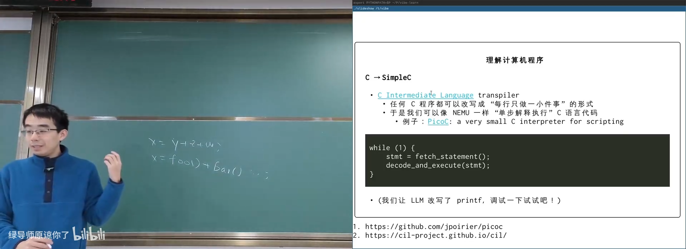
📷 将复杂 C 表达式改写为 SimpleC 的逐语句形式
回到原视频 (00:04:01)
C Intermediate Language（CIL）等项目就采用类似思路，把符合标准的 C99 程序转换成更简单、更适合分析和优化的 C 形式。
2.2 解释执行
最简单的解释器可以用下面的循环概括：
while (1) {
stmt = fetch_statement();
decode_and_execute(stmt);
}
如果程序已经拆成简单语句，解释器便可以从当前 Program Counter 取出语句，根据语义修改变量、栈或 PC，再进入下一状态。
课堂使用 GDB 演示了这种状态迁移：代码经过 SimpleC 风格改写后，每一步都可以观察变量、栈顶 Frame 和 PC 的变化。
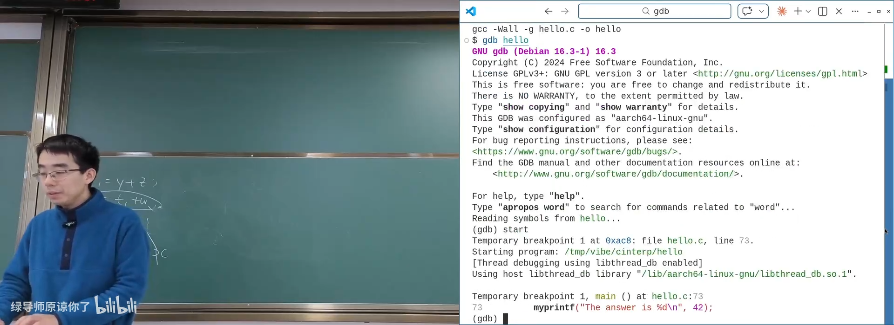
📷 在 GDB 中逐步观察程序状态迁移
回到原视频 (00:09:12)
还可以通过脚本自动收集每一步状态，形成程序执行 trace。这样，一个 C 程序在运行时就变成了一串可分析、可回放、可可视化的状态序列。
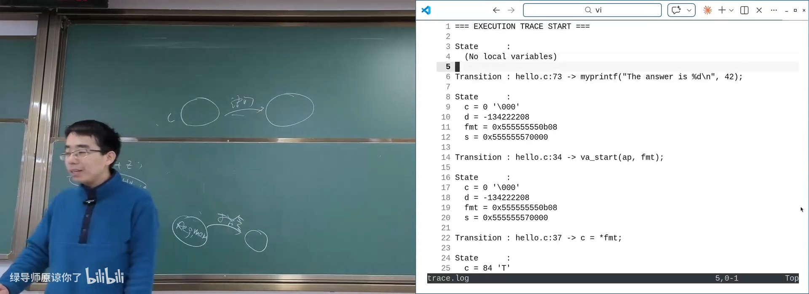
📷 将程序执行日志整理为状态迁移记录
回到原视频 (00:11:50)
2.3 函数调用比普通赋值复杂
汉诺塔长期被视为 C/C++ 入门时的难点。它与数学函数有一个根本差异：
C/C++ 函数执行具有先后顺序，并可能产生全局副作用。
斐波那契递归的交换顺序通常不改变返回值：
return f(n - 1) + f(n - 2);
return f(n - 2) + f(n - 1);
但汉诺塔会通过 printf 输出移动步骤，因此调用顺序不同，外部可观察结果也不同。
真正精确的程序状态并不仅是“变量 + PC”：
状态 = [StackFrame, StackFrame, ...] + 全局变量
每一个 Stack Frame 有自己的：
- 局部变量；
- 参数；
- 返回地址；
- 当前 PC。
初始状态只有一个 main Frame，包含 argc、argv、局部变量和 PC。状态迁移总是从最顶层 Frame 的 PC 取语句执行。
flowchart TD
A["顶层 Stack Frame<br/>PC / 局部变量 / 参数"] --> B["读取 PC 指向的语句"]
B --> C{"普通语句还是函数调用?"}
C -->|"普通语句"| D["更新变量或 PC"]
C -->|"函数调用"| E["保存当前 next PC"]
E --> F["压入新 Stack Frame"]
F --> G["新 Frame 的 PC 指向函数入口"]
D --> A
G --> A
函数调用可以归纳为两个机械操作：
- 保存调用者的 next PC；
- 压入被调用者的新 Frame，并将 PC 设置为函数入口。
返回则弹出当前 Frame，恢复调用者保存的 PC。
sequenceDiagram
participant M as main Frame
participant F as f Frame
M->>M: 保存 next PC
M->>F: push f Frame
F->>F: 执行函数体
F-->>M: pop Frame，恢复 PC
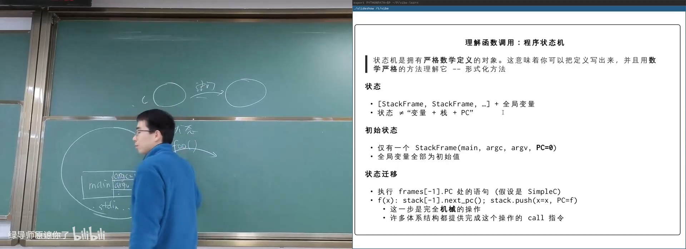
📷 调用时压入 Stack Frame，返回时恢复 PC
回到原视频 (00:24:51)
2.4 非递归汉诺塔与形式语义
一旦显式维护 Frame，递归程序就可以机械地改写为非递归版本：
struct frame {
int pc;
int n;
char from, to, aux;
int c1, c2;
};
程序根据当前 Frame 的 pc 决定执行入口代码、第一次递归、移动步骤还是第二次递归。表面上是循环，实际上是在模拟 C 语言的形式语义。
stateDiagram-v2
[*] --> Enter
Enter --> Base: n == 1
Base --> Return
Enter --> FirstCall: n > 1
FirstCall --> Move: return
Move --> SecondCall
SecondCall --> Return
Return --> [*]
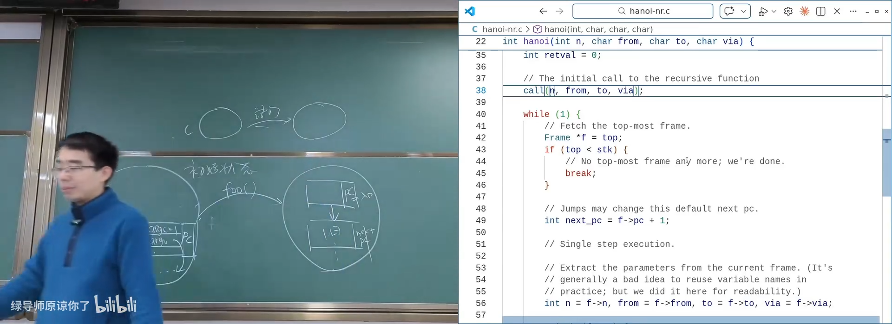
📷 显式 Stack Frame 实现的非递归状态机
回到原视频 (00:26:40)
这种视角下，计算机世界没有任何魔法。过程调用、递归和返回都可以由定义清晰的 Frame 操作解释。
3. 编译器与“编译正确”
3.1 编译器不是简单的逐句翻译器
编译器将 C 程序转换为目标代码。最早期编译器接近 transpiler，逐条改变语法或翻译语句；现代编译器则允许重排、合并和删除大量计算。
例如：
return 2 * 3 + 3 * 6 + 1;
可以在编译期直接得到 25。若某个变量从未被外部使用，则相关计算属于死代码，可以被删除。
flowchart LR
S["源程序"] --> C["编译器"]
C --> O["目标程序"]
O --> R["相同输入下的<br/>外部 API 调用序列"]
S --> R
3.2 编译正确性
在假设程序终止的前提下，可以给出一个实用定义：
对任意输入，编译后程序产生的外部调用序列，必须与 C 语言形式语义下的调用序列一致。
外部调用主要包括系统调用以及链接后才能确定行为的函数。编译器不能随意删除、重排或修改这些调用，因为它们可能改变文件、设备或真实世界。
只要程序最终不产生任何外部可观察行为，编译器原则上可以把所有计算删除。
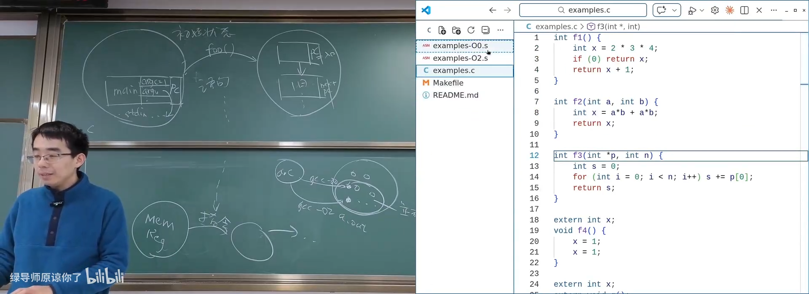
📷 未优化与优化版本在指令数量和常数折叠上的差异
回到原视频 (00:34:16)
课堂对比了 ARM64 上的 -O0 与 -O2 结果：多次赋值可以合并，常数运算可以折叠，但系统调用和外部 API 必须保留。
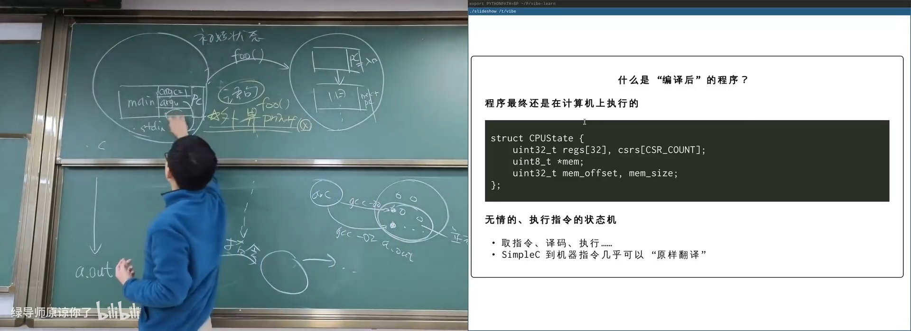
📷 编译优化不能改变对外可见的系统调用行为
回到原视频 (00:39:45)
4. 操作系统上的最小程序
4.1 从 _start 获得控制权
《计算机系统基础》通常告诉学生程序从 _start 开始。实际上，普通 C 程序并不直接从 main 开始：
- 操作系统加载器设置进程初始状态；
- 入口先跳到运行时初始化代码；
- 初始化完成后调用
main； main返回后执行清理逻辑；- 最后必须请求操作系统终止进程。
flowchart LR
L["OS 加载可执行文件"] --> S["_start / 初始化代码"]
S --> M["main"]
M --> F["运行时清理"]
F --> E["exit 系统调用"]
E --> X["操作系统回收进程"]
4.2 程序为什么不能自己停下来
指令集中的普通指令只能改变当前进程的寄存器和内存。它们不能让整个计算机断电，也不能可靠地终止进程。程序若直接从 _start 返回，会尝试从初始栈中弹出一个返回地址；通常得到非法 PC，最终触发 segmentation fault。
程序必须请求操作系统：
movq $SYS_exit, %rax # 系统调用编号: exit
movq $1, %rdi # 退出状态
syscall
不同体系结构的系统调用指令不同：
| 体系结构 | 指令 |
|---|---|
| x86-64 | syscall |
| RISC-V | ecall |
| AArch64 | svc |
4.3 用汇编写最小 Hello World
最小程序不需要标准库，只需把参数放入正确寄存器并执行系统调用：
movq $SYS_write, %rax
movq $1, %rdi # stdout
lea message(%rip), %rsi
movq $12, %rdx # length
syscall
movq $SYS_exit, %rax
movq $1, %rdi
syscall
汇编器生成目标文件，链接器设置入口地址，最终得到一个可以正常输出并退出的 ELF 文件。
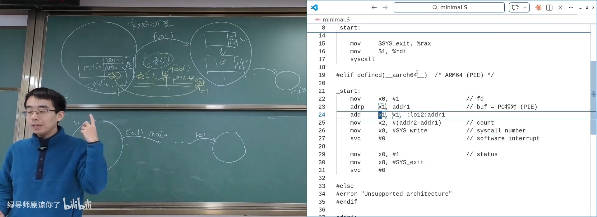
📷 最小可执行文件的第一条指令与 GDB 调试
回到原视频 (00:51:30)
4.4 系统调用：整个课程最重要的一页
(参考时间: 00:53:46)
普通指令只能在当前程序的状态内工作。syscall 是一条特殊指令：
- 它主动放弃当前程序对状态机的控制；
- 控制权交给操作系统；
- 操作系统根据寄存器中的编号和参数执行服务；
- 服务完成后可能修改进程状态后返回；
- 也可能直接终止进程，永远不返回。
sequenceDiagram
participant P as 应用程序
participant O as 操作系统
P->>P: 设置 syscall 编号与参数
P->>O: syscall
O->>O: 权限检查与系统服务
alt 正常服务
O-->>P: 修改状态并返回
else 拒绝或终止
O-->>P: 返回错误，或不再返回
end
讲师用“全身麻醉”作类比：程序先约定好请求，随后完全失去控制权。醒来后可能一切正常，也可能状态被改变，甚至再也醒不过来。
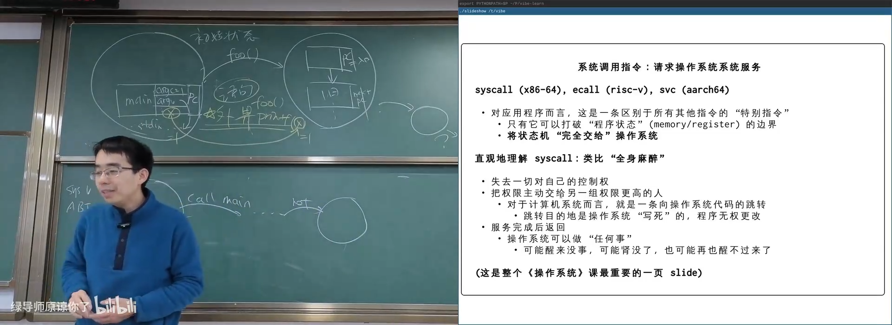
📷 syscall 将状态机控制权完全交给操作系统
回到原视频 (00:53:46)
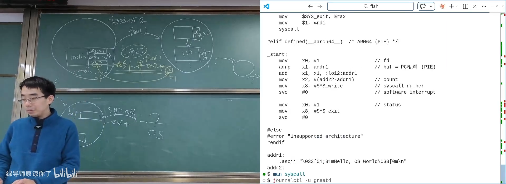
📷 用 GDB 单步观察 write 与 exit 系统调用
回到原视频 (00:57:33)
系统调用参数通常通过寄存器传递：
- x86-64：编号放
rax，参数依次放rdi、rsi、rdx等； - AArch64：编号放
x8，参数依次放x0、x1、x2等。
5. 所有真实应用程序都是同一种东西
(参考时间: 00:58:54)
操作系统面前“众生平等”。无论是终端、窗口管理器、VS Code、浏览器、游戏、杀毒软件还是病毒，它们与最小汇编程序的结构都没有本质区别：
应用程序 = 计算 + 系统调用
程序被加载后从入口开始执行，不断完成计算和系统调用，最终退出。
flowchart LR
E["execve 创建初始状态"] --> R["状态机执行"]
R --> C["普通计算"]
R --> S["系统调用"]
C --> R
S --> R
R --> X["_exit / exit_group"]
5.1 可执行文件是状态机的初始状态描述
ELF 文件包含：
- 文件类型和机器架构；
- 程序入口地址；
- 节区与段；
- 指令序列；
- 数据与符号信息；
- 动态链接所需元数据。
因此，可执行文件可以理解为：
“一个程序状态机初始状态的完整描述。”
minimal.S、/usr/bin/as、浏览器和游戏都是 ELF 文件，只是复杂度相差巨大。
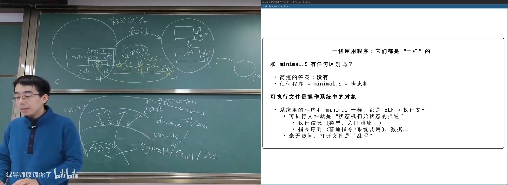
📷 最小程序与真实应用程序都是同一种 ELF 对象
回到原视频 (01:10:03)
6. 操作系统上的应用世界
6.1 Applications、Utilities 与 Daemons
应用生态通常分为多层：
flowchart TD
A["上层 Applications<br/>编辑器、浏览器、媒体工具"] --> U["Utilities<br/>Shell、coreutils、binutils"]
U --> D["Daemons / 服务<br/>systemd、udisks、cron、sshd"]
D --> S["操作系统系统调用"]
A --> S
Applications
- VS Code、Cursor 等开发工具；
- GCC、Clang、Node.js、GDB 等开发与调试工具；
- tmux、Vim、htop 等终端工具；
- LibreOffice、GIMP、Chrome、Firefox；
- OBS、VLC 等媒体工具。
Utilities
- GNU Coreutils、BusyBox、Toybox；
- Shell、Claude Code；
- Binutils；
- apt、dpkg、ip、ssh、curl；
- ffmpeg、GStreamer。
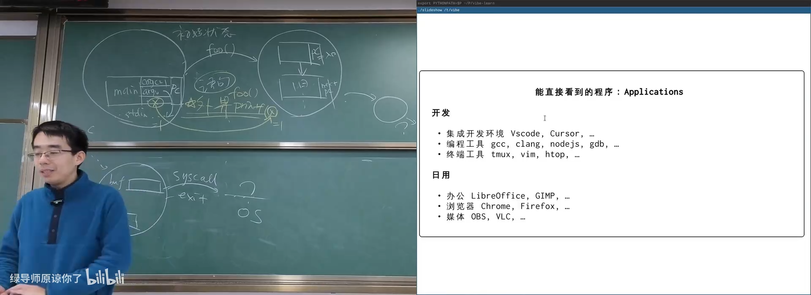
📷 Applications、Utilities 与工具生态
回到原视频 (01:00:00)
Daemons
- systemd 管理服务；
systemd-udevd处理设备事件；cron定时执行任务；udisksd处理磁盘与 U 盘挂载；sshd、数据库服务、D-Bus；- 音频与图形服务。
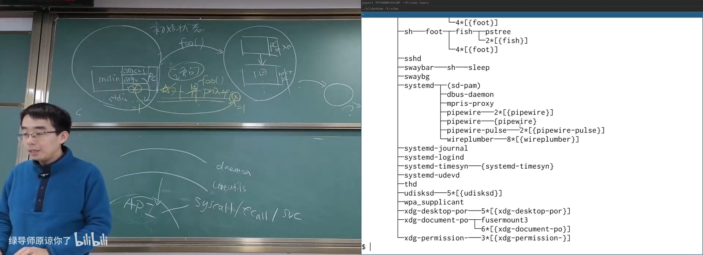
📷 后台守护进程构成系统服务层
回到原视频 (01:07:11)
6.2 图形界面为什么不能直接画屏幕
如果每个 GUI 程序都直接向屏幕写像素，窗口会互相覆盖，设备也会失控。因此系统在操作系统 API 之上又构建了抽象层：
flowchart LR
A["GUI 应用"] --> T["GTK / Qt / 工具包"]
T --> C["Wayland Compositor"]
C --> G["图形驱动"]
G --> S["操作系统与显示设备"]
应用通过消息协议请求窗口管理器绘制内容。窗口移动、缩放和遮挡由合成器统一管理，因此应用只关心自己的相对坐标。
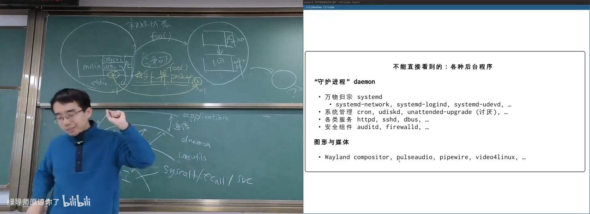
📷 图形应用通过 Wayland 和合成器间接控制屏幕
回到原视频 (01:08:48)
7. 用正确的工具打开程序
7.1 strace：观察系统调用
strace 可以跟踪程序执行过程中的系统调用。最简单的程序在启动时也会执行大量系统调用，因为动态链接器、运行时和标准库都需要打开文件、映射内存和初始化状态。
strace ./a.out
strace -f gcc hello.c
-f表示同时跟踪子进程；- 输出会显示
execve、openat、read、write、mmap、unlinkat等调用； - 通过这些记录可以判断程序是内部完成工作，还是启动外部工具。
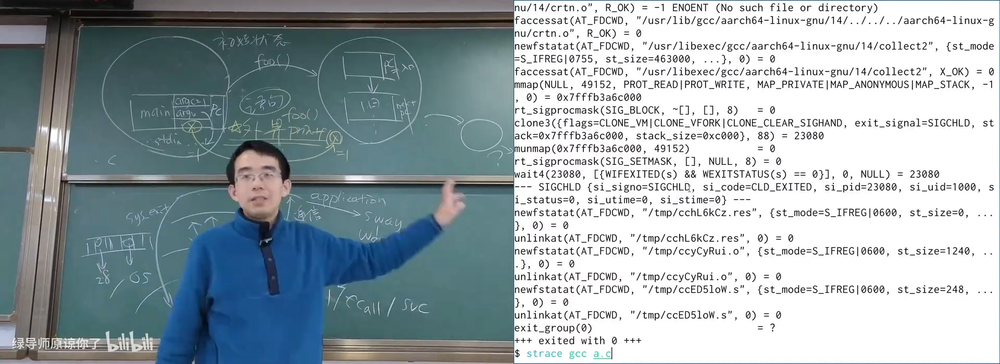
📷 GCC 编译过程中的系统调用序列
回到原视频 (01:19:35)
7.2 用 UNIX 管道过滤 trace
完整 trace 可能包含数千行。传统 UNIX 方法是把文本通过管道交给 grep、sed 和 awk：
strace -f gcc hello.c 2>&1 \
| grep execve \
| sed 's/^[0-9]* *//'
更复杂的问题可以继续串联工具。今天的 Agent 同样会优先组合已有命令行工具，而不是每次都从头编写完整程序。
flowchart LR
T["strace 原始日志"] --> G["grep 过滤"]
G --> S["sed / awk 整形"]
S --> A["AI 解释"]
A --> D["进程关系与调用流程图"]
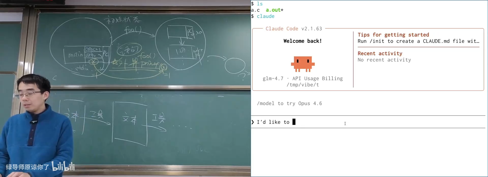
📷 通过管道与 AI 分析 GCC 的进程树
回到原视频 (01:23:53)
7.3 GCC 在背后做了什么
gcc a.c 并不是把所有工作都放在同一个进程里完成。trace 可以看到它通过 execve 启动：
- 编译器前端；
- 汇编器；
- 链接器。
GCC 还可能生成临时 .o 文件，完成链接后通过 unlinkat 删除。
flowchart LR
G["gcc 驱动程序"] --> C["cc1 / 编译器前端"]
C --> A["as / 汇编器"]
A --> L["ld / 链接器"]
L --> O["可执行文件"]
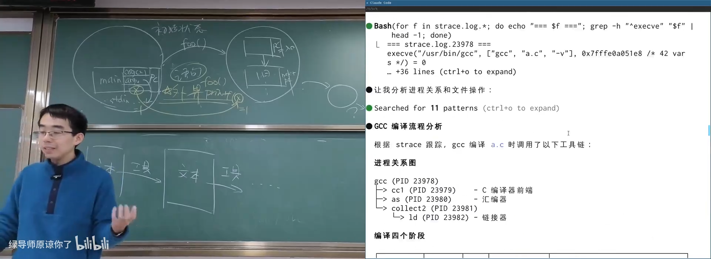
📷 由 trace 还原出的 GCC 子进程关系
回到原视频 (01:27:18)
7.4 图形程序 xedit
xedit 是简单的 X11 图形编辑器。它的系统调用主要由 poll、recvmsg 和发送消息组成，而不是逐个像素直接写屏幕。
程序与 X Server 按照协议通信；在虚拟机中，X11 消息还可以通过 SSH X11 forwarding 转发到宿主机。VS Code 等现代 GUI 程序在抽象层上采用同样的交互模型。
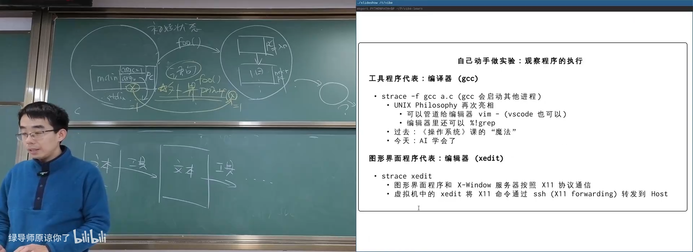
📷 xedit 通过 X11 协议与图形服务通信
回到原视频 (01:25:13)
8. 打开二进制：从观察走向修改
8.1 二进制没有魔法
对象文件和可执行文件都是字节序列。常用工具包括：
objdump：反汇编与查看节区；file：识别文件类型与架构；readelf：分析 ELF 结构；strings：提取可打印字符串；size：查看各段大小；xxd/hexdump：查看和修改原始字节。
flowchart LR
B["ELF 字节序列"] --> F["file / readelf"]
B --> O["objdump 反汇编"]
B --> S["strings"]
B --> H["xxd / hexdump"]
H --> P["定位目标字节"]
P --> M["修改二进制"]
M --> V["重新运行并验证"]
8.2 修改最小程序的返回值
课堂让 AI 完成一个小任务：
把
minimal程序的返回值从 1 改成 42。
Agent 先运行程序确认返回值，再用 xxd 等工具定位字节，分析 ARM64 机器码，找到设置返回值的 mov 指令，然后修改目标字节并重新执行验证。
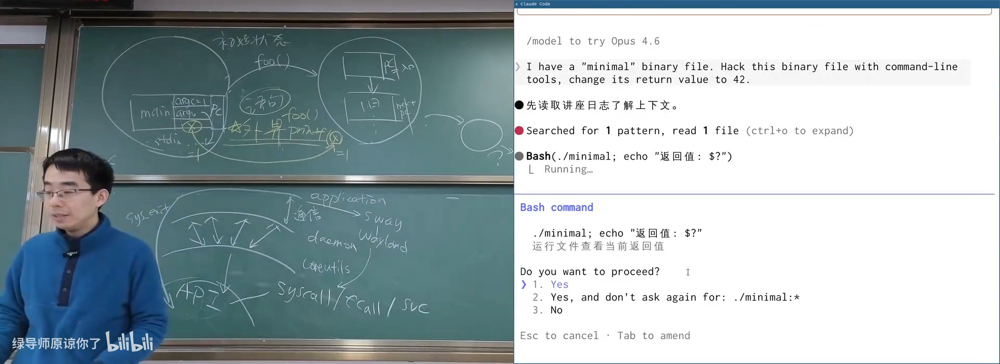
📷 AI 调用命令行工具定位并修改二进制字节
回到原视频 (01:11:47)
这体现了现代工具链的威力：
- 工具可以组合；
- 代码可以无限复用；
- AI 知道在正确的时候调用正确工具；
- 初学者与顶尖工程师的工具执行力差距正在缩小。
8.3 童年逆向故事
(参考时间: 01:14:28)
讲师回忆了早期游戏光盘时代的一次逆向经历。在《大富翁 4》的存档目录中发现隐藏内容，存档中的字节控制进度。把一个 0x00 改成 0x01，游戏行为就发生变化。
当时既缺少工具，也缺少知识，因此感觉困难。今天：
- 同样方法可以用于分析 Windows binary；
- 复杂文件可以被工具切分和解释；
- AI 能帮助初学者理解机器码和文件格式；
Curiosity is all you need。
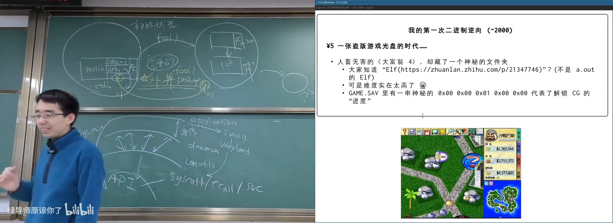
📷 一次由单个字节改变游戏状态的逆向经历
回到原视频 (01:14:28)
9. 从现象回到操作系统接口
本讲展示了大量应用，但最终都回到同一个模型：
mindmap
root((应用程序))
计算
赋值
分支
循环
函数调用
系统调用
进程
fork
execve
exit
文件与设备
open
close
read
write
内存
mmap
brk
进程间通信
pipe
socket
操作系统提供的抽象包括：
- 进程管理；
- 文件与设备管理；
- 虚拟内存；
- 进程间通信；
- 网络；
- 权限与安全。
应用不会直接操作硬件，而是请求操作系统帮助。操作系统负责：
- 检查权限；
- 维护对象状态；
- 隔离不同程序；
- 调度共享资源；
- 为开发者提供稳定抽象。
10. 本讲总结
核心结论如下：
- 程序是状态机，状态由栈帧、变量和每个 Frame 的 PC 组成。
- 函数调用可以机械地理解为压栈、保存 next PC、跳转入口。
- 任意递归程序都可以显式维护栈帧，改写为等价的非递归状态机。
- 编译正确意味着编译前后对所有输入产生相同的外部调用序列。
- 普通指令只能修改当前程序状态，
syscall才能请求操作系统服务。 - 程序无法自行退出，必须调用
exit；调度和资源回收由操作系统完成。 - 所有真实应用，无论是 GCC、浏览器还是游戏，都是“计算 + 系统调用”。
strace、GDB、objdump 和二进制工具能打开程序执行过程。- GUI、Shell 和工具链都不是魔法，而是建立在系统调用之上的多层抽象。
- AI 擅长组合已有工具，但人类必须理解系统边界与工具用途。
程序 = 状态机。
应用 = 计算 + 操作系统 API。
附：官方参考与延伸阅读
课程与讲义：
工具、项目与课堂资料：
- C Intermediate Language
- PicoC：小型 C 解释器
- C 解释执行器演示
- 汉诺塔状态机演示
- mini-rv32ima
- 编译器与优化演示
- 最小可执行文件演示
- GNU Coreutils
- BusyBox
- Toybox
- GNU Binutils
- GDB 文档目录，尤其是 Reverse Execution 与 TUI。
阅读建议：
- 与 AI 一起了解 Coreutils 和 Binutils；
- 浏览 BusyBox、Toybox 中常用工具的精简实现；
- 使用 GDB 单步观察简单程序、动态链接器和系统调用。
版权说明：课程讲义与幻灯片的著作权归蒋炎岩所有，采用 Creative Commons BY-NC 4.0 许可。电子书正文为课堂内容的书面化重构，脚本占位符已替换为视频画面或官方资料渲染图；引用与来源链接均保留在本页。